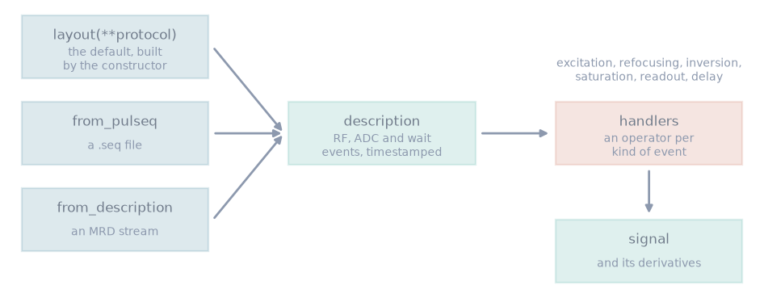

Signal model#
TL;DR
A signal model is a
Simulatorsubclass: a handler per kind of event, and a layout of one repetition.The layout is the default description; a Pulseq file or an MRD stream can replace it, and the handlers still play every event.
Batching, derivatives, devices, estimation and design are written once against this interface.
You give blochsim a sequence and a tissue, and it returns the signal and its derivatives. The sequence is written once, as a signal model, and the 26 shipped simulators are written the same way as any you add.
Capabilities#
Builds a sequence from a subclass that names its handlers and implements
layout.Show code and tests
Code:
Simulator. Tests: a protocol with no layout says so; a trigger table defaults to the bare operators (test_state_machine.py).Composes operators with
@, each starting where the previous one ends.Show code and tests
Code:
Operator.__matmul__. Test: a bare operator follows the one before it (test_operators.py).Takes the sequence parameters at construction, and lets a call override them.
Show code and tests
Code:
bind(). Test: the protocol may be overridden per call (test_state_machine.py).Returns the description the layout produced, with the timestamp of every event.
Show code and tests
Code:
describe(). Test: the repetition lasts as long as the operators do (test_description_helper.py).Simulates a description read from a Pulseq file or an MRD stream, skipping the layout.
Show code and tests
Code:
from_pulseq(),from_description(). Tests: a description handed over whole skips the layout (test_state_machine.py); the steady state is the spoiled gradient echo closed form (test_pulseq_reader.py).Plays a read description through the handlers of the class it is given to, which supply the dephasing it does not carry.
Show code and tests
Code:
from_description(). Test: which simulator reads a stream is what decides the dephasing (test_state_machine.py).Carries a tissue property into the kernels only when a call gives it as a map.
Show code and tests
Code:
blochsim/_model/_state_machine.py. Tests: a property the model does not declare stays out of the kernel; a declared property given a map reaches the kernel (test_signal_model.py).Accepts a closed form (
evaluate) in place of a layout, with the same batching and derivatives.Show code and tests
Code:
evaluate(). Test: a closed form travels the same way (test_array_backends.py).Returns the signal in the array library it was given: NumPy, CuPy or PyTorch.
Show code and tests
Code:
simulate(). Test: the signal comes back in the library it was asked in (test_array_backends.py).
Division of responsibility#
Gradient waveforms and spatial encoding, which belong to sequence design tools such as pypulseqpp. An event dephases by whole configuration orders.
The reconstruction encoding, which a model-based reconstruction takes from mri-nufft or bartorch.
Safety checks on gradients, PNS or SAR.
Method#


A description comes from the layout, a Pulseq file or an MRD stream. The handlers play its events, and the kernels return the signal and its derivatives.#
Handlers#
A handler is the operator for one kind of event, bound by a class attribute of
that name. A pulse is played by the handler its Pulseq RF use names:
excitation, refocusing, inversion, saturation, preparation or
other, and a pulse with no use by excitation. An ADC event is played by
readout and a wait by delay. A description carries no gradient events: a
gradient is an action of the event it follows or precedes, so the handler
decides, for example, whether a readout is followed by an unbalanced gradient,
ideal spoiling or a rewinder. The built-in readouts SPGRReadout,
SSFPFidReadout, bSSFPReadout and FSEReadout cover the four sequence
families.
Layout#
layout takes the sequence parameters in milliseconds and degrees, and
returns the operators of one repetition, built through self.operators, in
seconds and radians. The first call builds the description; later calls
rebind the numbers onto it. What is read from a file or stream is in
Sequence description, and the tissue physics in Extended phase graphs.
Examples#
1. Your first simulation: a shipped simulator over three tissues.
3. Custom signal model: a new signal model against its closed form.
4. Description-based simulation: one description, two sets of handlers.
5. Custom operator: new operators composed with
@.